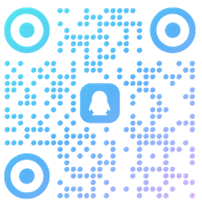

TinyBIM 是一个基于新一代Web图形api WebGPU的BIM引擎
软件介绍
# 用最小的引擎，开最大的模型,流程运行百万级构件、10亿顶点场景
# 渐进式加载，秒级加载。
# 支持Revit2018到Revit2024版本,Ifc.(更多格式，正在开发中)
# 支持Revit文件的图纸解析,并在引擎中显示
# 数据离线:可以在模型浏览界面右键菜单中选择离线数据下载模型数据,配合tinybim npm包可以实现离线开发
# 支持基于视图的保存(可以在视图浏览器中创建视图)
# 自带默认UI,包括图纸显示、构建显隐、剖切、材质修改、属性查看、测量、场景树、光照设置、纹理显示、边线设置等功能。所有功能都在右键菜单中
# 支持二次开发:
npm: npm i tinybim
https://github.com/tinybim/Samples.git )
# 交流群qq:741088338
